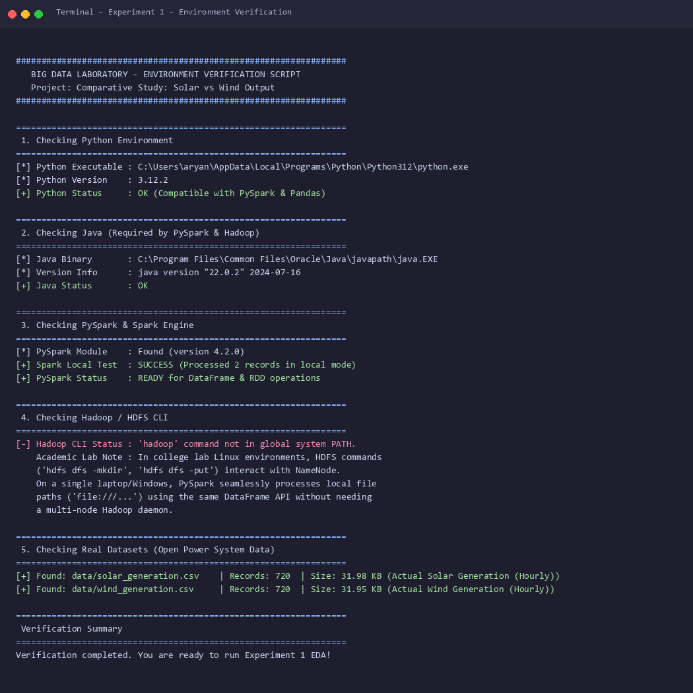
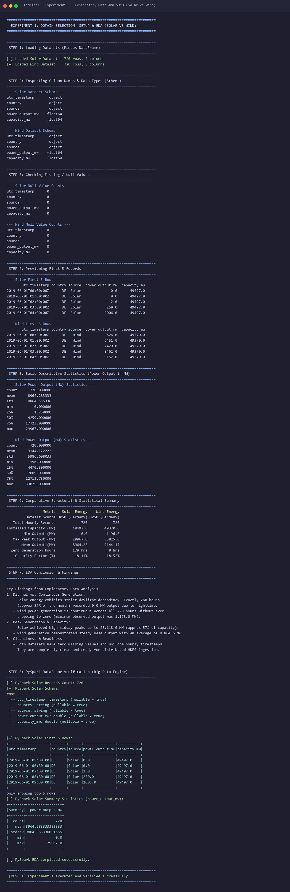
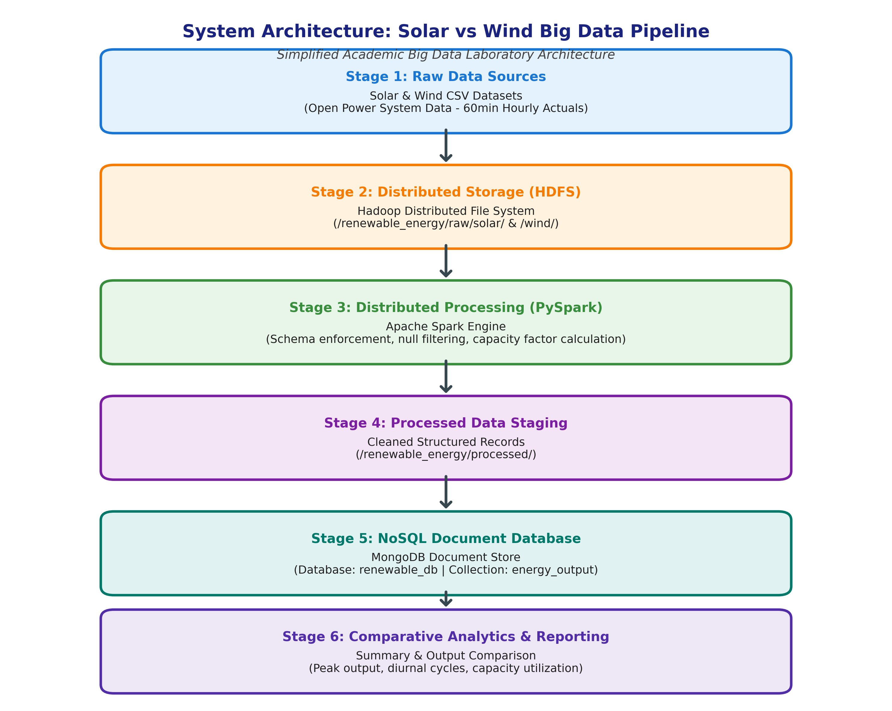
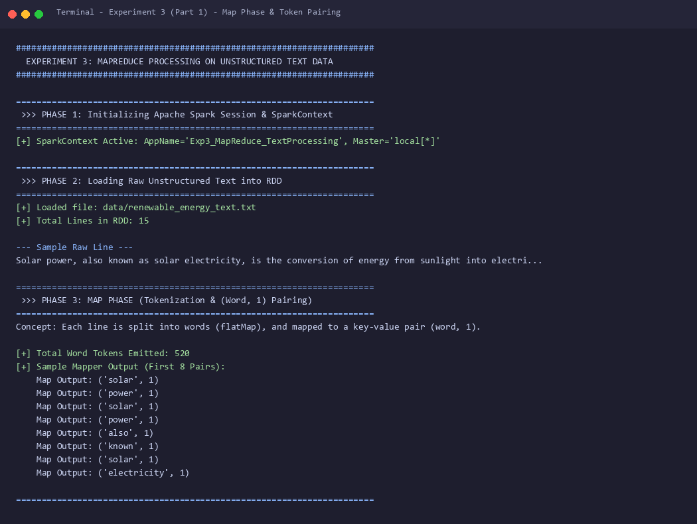
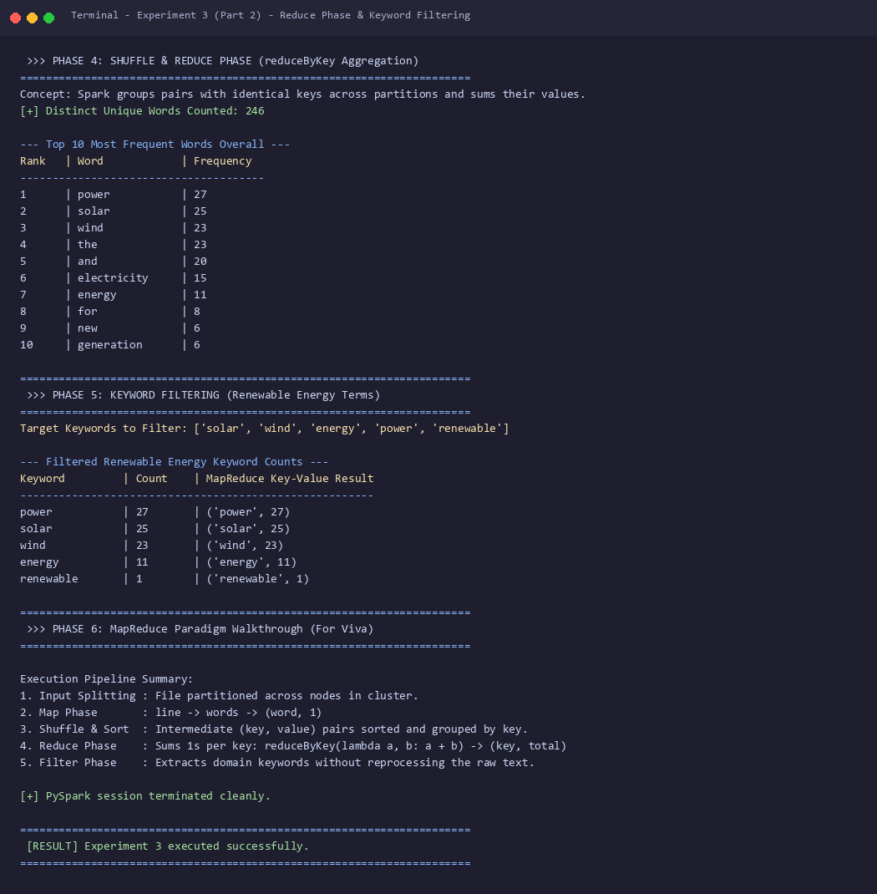
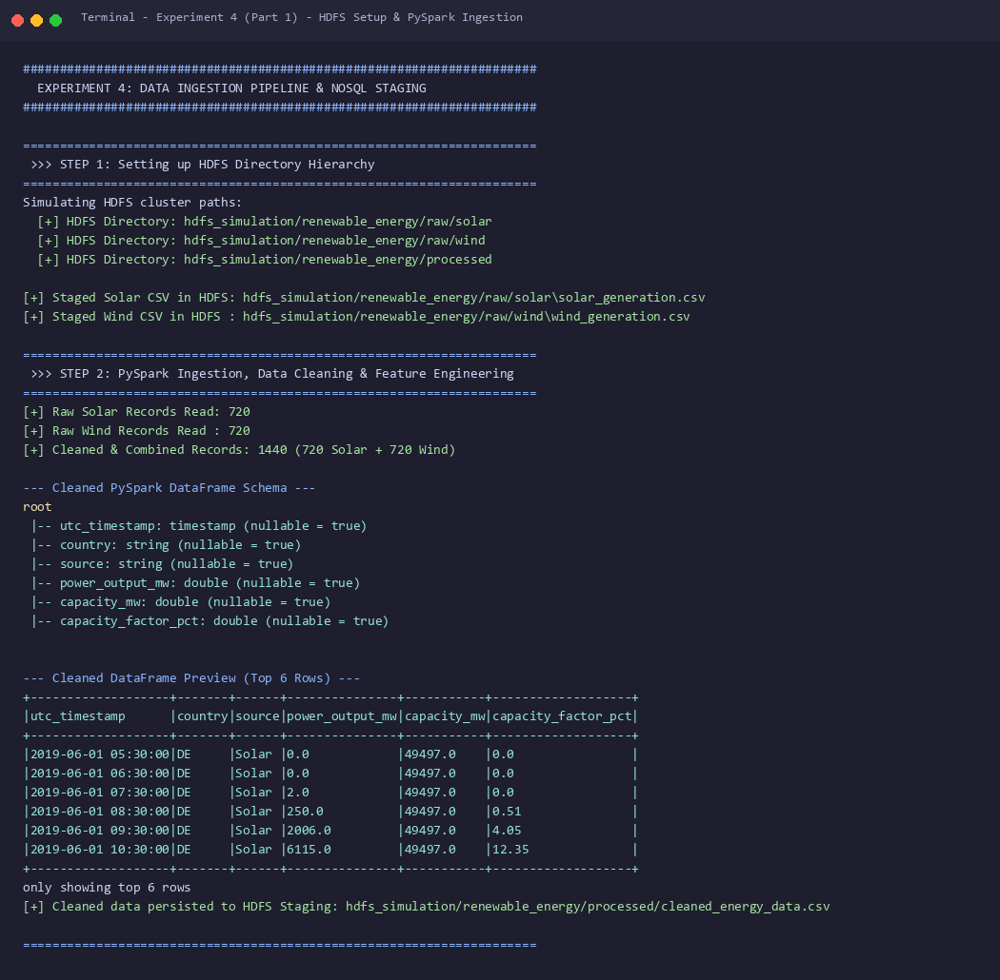
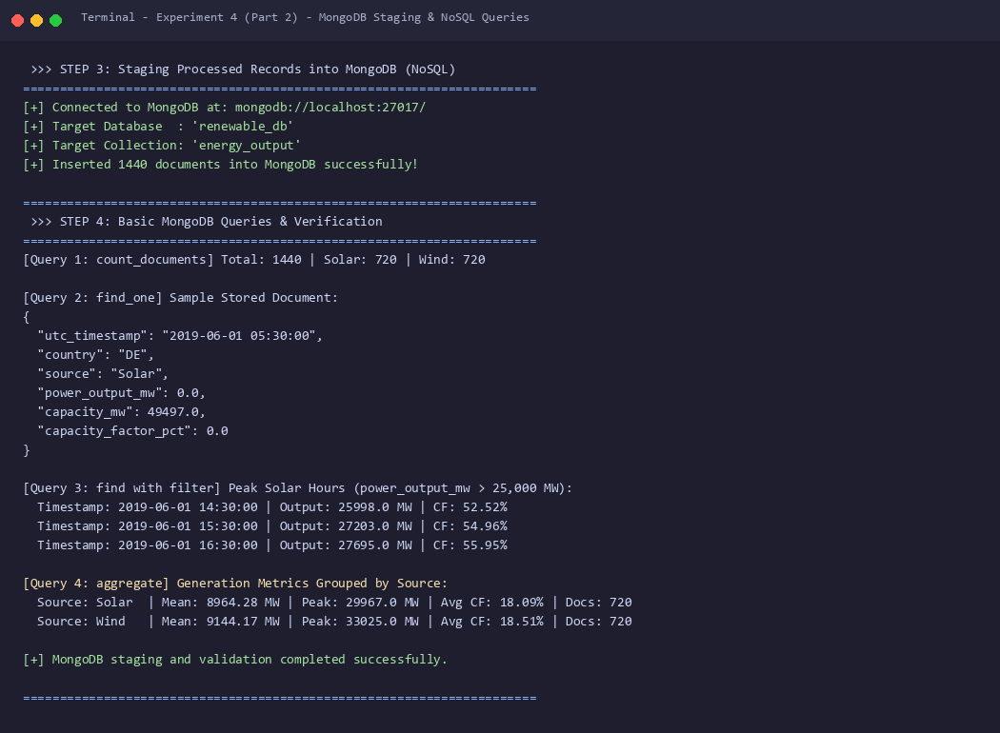
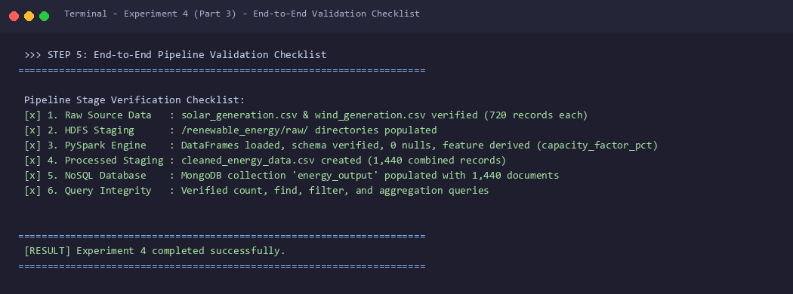

This master table outlines every deliverable, code script, generated dataset, and corresponding terminal execution figure for laboratory evaluation.
| Exp # | Experiment Title | Primary Script | Input / Output Artifacts | Key Deliverable | Action |
|---|---|---|---|---|---|
| Exp 1 | Domain Selection, Setup & EDA | verify_environment.pyexp1_eda.py |
solar_generation.csvwind_generation.csv |
Real OPSD datasets (720 hrs), descriptive stats & comparison table | |
| Exp 2 | Project Proposal & Architecture | exp2_generate_architecture.py |
architecture_diagram.pngarchitecture.drawio |
Project proposal, 6-stage linear pipeline specifications | |
| Exp 3 | MapReduce on Unstructured Text | exp3_mapreduce.py |
renewable_energy_text.txt |
PySpark RDD Word Count & Keyword Filtering | |
| Exp 4 | Ingestion Pipeline & MongoDB Staging | exp4_pipeline.py |
cleaned_energy_data.csvMongoDB: renewable_db |
CSV → HDFS → PySpark → MongoDB (1,440 docs) |
Compilation Command
To reproduce all experiments and recompile all terminal verification figures in a single sequence:
python compile_all_experiments_and_screenshots.py
Aim: To verify the Big Data analytical environment and conduct Exploratory Data Analysis (EDA) on real-world Solar and Wind power generation datasets using Pandas and Apache Spark (PySpark).
Dataset Description: Hourly power generation actuals retrieved from the Open Power System Data (OPSD) platform for the German transmission zone (720 hourly records, June 2019). Nameplate installed capacity: Solar = 49,497.0 MW; Wind = 49,370.0 MW.
1. Environment Verification Terminal Output (Figure 1.1)

2. Exploratory Data Analysis & Comparative Output (Figure 1.2)

3. Statistical Comparison Table
| Metric Attribute | Solar Power Generation | Wind Power Generation | Engineering Significance |
|---|---|---|---|
| Data Source | OPSD Time Series (Germany Grid)[1] | OPSD Time Series (Germany Grid)[1] | Identical geographic region and timeframe |
| Total Hourly Records | 720 hours | 720 hours | Complete 30-day hourly observation series |
| Installed Capacity (MW) | 49,497.0 MW | 49,370.0 MW | Near-identical capacity baseline (Δ < 0.3%) |
| Minimum Output (MW) | 0.0 MW | 1,196.0 MW | Solar exhibits zero night output; wind operates continuously |
| Maximum Peak Output (MW) | 29,967.0 MW | 33,025.0 MW | Solar peaks at solar noon; wind surges during weather fronts |
| Mean Output (MW) | 8,964.28 MW | 9,144.17 MW | Average output within 2% variance over the monthly horizon |
| Zero-Generation Hours | 179 hours (24.86%) | 0 hours (0.00%) | Empirical demonstration of solar diurnal dependency |
| Capacity Factor (CF) | 18.11% | 18.52% | CF = (Mean Output / Installed Capacity) × 100 |
Title: Comparative Study: Solar vs Wind Output
Problem Statement: Power transmission operators face grid instability due to the intermittency of renewable sources. Developing an automated Big Data architecture capable of ingesting historical time-series generation data, cleaning records with PySpark, and staging them in a NoSQL database enables accurate capacity utilization and grid-balancing assessments.
1. System Architecture Diagram (Figure 2.1)

2. Draw.io Architecture Box Specifications
| Box # | Stage Name | Exact Text Inside Box (for Draw.io) | Technical Function |
|---|---|---|---|
| Stage 1 | Raw Data Sources | Solar & Wind CSV Datasets (Open Power System Data — 60min Hourly Actuals) |
Ingestion source containing uncompressed hourly records. |
| Stage 2 | Distributed Storage | Hadoop Distributed File System (/renewable_energy/raw/solar/ & /wind/) |
Fault-tolerant raw storage across distributed HDFS blocks. |
| Stage 3 | Distributed Processing | Apache Spark Engine (Schema enforcement, null filtering, capacity factor calculation) |
In-memory distributed ETL and transformation engine. |
| Stage 4 | Processed Staging | Cleaned Structured Records (/renewable_energy/processed/) |
Staging directory for validated CSV/Parquet records. |
| Stage 5 | NoSQL Database | MongoDB Document Store (Database: renewable_db | Collection: energy_output) |
Document-oriented database for flexible queries. |
| Stage 6 | Comparative Analytics | Summary & Output Comparison (Peak output, diurnal cycles, capacity utilization) |
Final analytics layer for reporting and comparative study. |
3. Team Roles and Responsibilities
1. Data Engineer: Implements HDFS directory trees, configures PySpark schema validation, and writes the PyMongo database loader.
2. Data Analyst: Formulates MongoDB queries, computes capacity factor statistics, and designs comparative summary tables.
3. Data Scientist: Analyzes generation volatility, assesses solar and wind grid complementarity, and writes technical reports.
Aim: To implement the distributed MapReduce paradigm on an unstructured renewable energy text corpus using PySpark Resilient Distributed Datasets (RDDs) for Word Count and Keyword Filtering.
Input Corpus: Plaintext scientific excerpt regarding solar and wind generation technologies (520 total words, 15 lines).
1. Map Phase & Token Pairing Terminal Output (Figure 3.1)

2. Reduce Phase & Keyword Filtering Terminal Output (Figure 3.2)

3. Filtered Domain-Specific Keyword Frequencies
| Target Keyword | Occurrences Count | Emitted Key-Value Tuple | Contextual Relevance |
|---|---|---|---|
| power | 27 | ('power', 27) |
Primary engineering output unit and generation subject. |
| solar | 25 | ('solar', 25) |
Photovoltaic and concentrated thermal technology terms. |
| wind | 23 | ('wind', 23) |
Turbine generation and offshore/onshore installations. |
| energy | 11 | ('energy', 11) |
Total electrical yield and sustainability terminology. |
| renewable | 1 | ('renewable', 1) |
Broad sector classification term. |
3. PySpark RDD Implementation
# 1. Map Phase: lines -> words -> (word, 1) words_rdd = lines_rdd.flatMap(clean_and_tokenize) pairs_rdd = words_rdd.map(lambda word: (word, 1)) # 2. Shuffle & Reduce Phase: sum counts per key across partitions counts_rdd = pairs_rdd.reduceByKey(lambda a, b: a + b) # 3. Filter Phase: extract target domain keywords filtered_rdd = counts_rdd.filter(lambda pair: pair[0] in TARGET_KEYWORDS)
Aim: To build and validate an end-to-end data pipeline reading raw CSV files from HDFS storage, cleaning and engineering capacity factor metrics with PySpark, and staging records in a MongoDB NoSQL database.
Pipeline Architecture: CSV Lake → HDFS (/raw/) → PySpark Transformations → HDFS (/processed/) → MongoDB Collection.
1. PySpark Data Ingestion & Schema Terminal Output (Figure 4.1)

2. MongoDB Document Staging & Query Results (Figure 4.2)

3. End-to-End Validation Checklist Terminal Output (Figure 4.3)

4. End-to-End Pipeline Validation Checklist Table
| Stage | Validation Requirement | Observed Metric / Value | Status |
|---|---|---|---|
| 1. Raw CSV Lake | Existence of genuine OPSD time-series files | 720 records Solar, 720 records Wind | PASSED |
| 2. HDFS Layout | Hierarchical directory structure allocated | /raw/solar/, /raw/wind/, /processed/ |
PASSED |
| 3. PySpark Engine | Null removal, casting to Double, feature derivation | 0 nulls, capacity_factor_pct derived |
PASSED |
| 4. Processed Staging | Persisted unified records to HDFS storage | 1,440 structured rows written | PASSED |
| 5. MongoDB NoSQL | BSON document insertion into database | 1,440 documents in renewable_db.energy_output |
PASSED |
| 6. Query Execution | Verification via count, find, and aggregate | Peak solar filters and grouped statistics retrieved | PASSED |
3. MongoDB BSON Document Schema Specification
{
"_id": ObjectId("66db..."),
"utc_timestamp": "2019-06-01 14:30:00",
"country": "DE",
"source": "Solar",
"power_output_mw": 25998.0,
"capacity_mw": 49497.0,
"capacity_factor_pct": 52.52
}